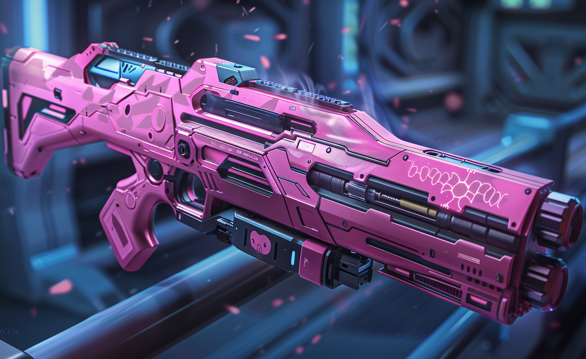
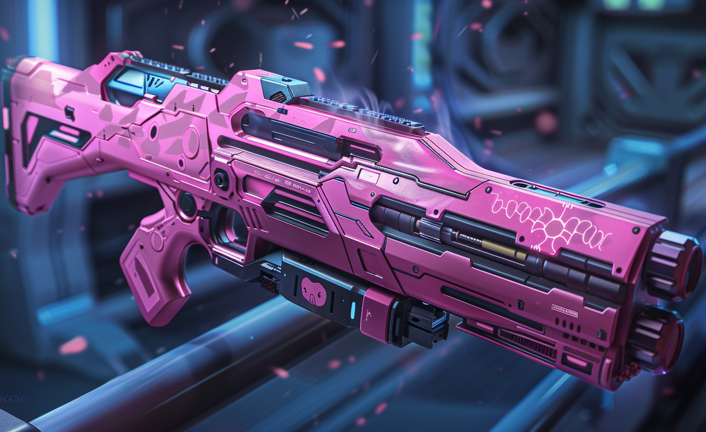

Join the Fight!
In the 1960s, during a turbulent era of scientific experimentation, humans embarked on a venture that would forever
alter the course of evolution on Earth. In their relentless pursuit of enhancing human intelligence, scientists
conducted controversial experiments on both pigs and chimpanzees, utilizing a serum designed to accelerate cognitive
development. These experiments, however, appeared to be colossal failures at the time, as the expected results did not
materialize as anticipated.
Unknown to humanity, the intelligence serum had not failed entirely; rather, its effects were far subtler and much
slower than expected. Unbeknownst to humans, this serum had subtly altered the genetic code of the test subjects,
setting in motion a transformation that would span countless generations.
As the serum-induced genetic changes manifested, the affected pigs and chimps began to exhibit signs of heightened
intelligence over the course of hundreds of generations. Their cognitive abilities expanded at an astonishing rate, far
surpassing the natural evolution that humans had undergone. While humanity descended into self-destructive conflicts,
driven by wars and a disheartening trend of breeding intellectual mediocrity, the pigs and chimps in the shadows
underwent a silent transformation.
By the time humanity had reached its inevitable demise, leaving the Earth scarred and depleted, the descendants of those
experimentally altered pigs and chimps emerged as the most advanced species on the planet. The pigs, carrying the
genetic legacy of those 1960s experiments, now possessed unparalleled intelligence, while the AstroChimps, who had been
sent into space with the altered gene, had similarly evolved into hyper-intelligent beings.

 
